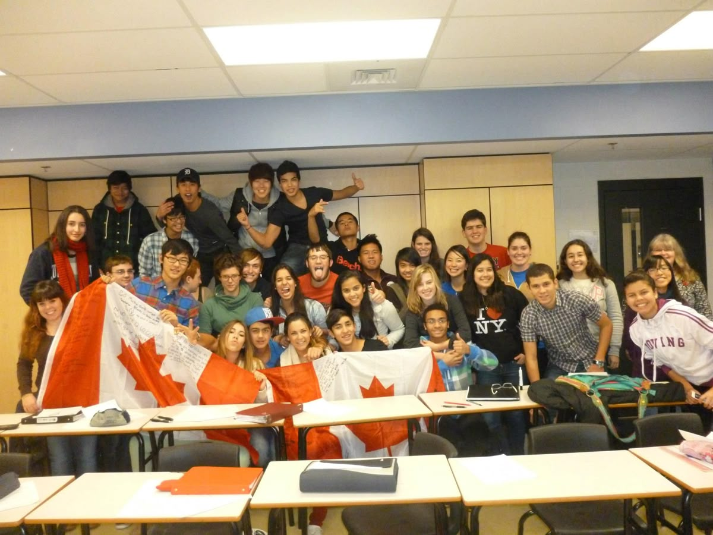
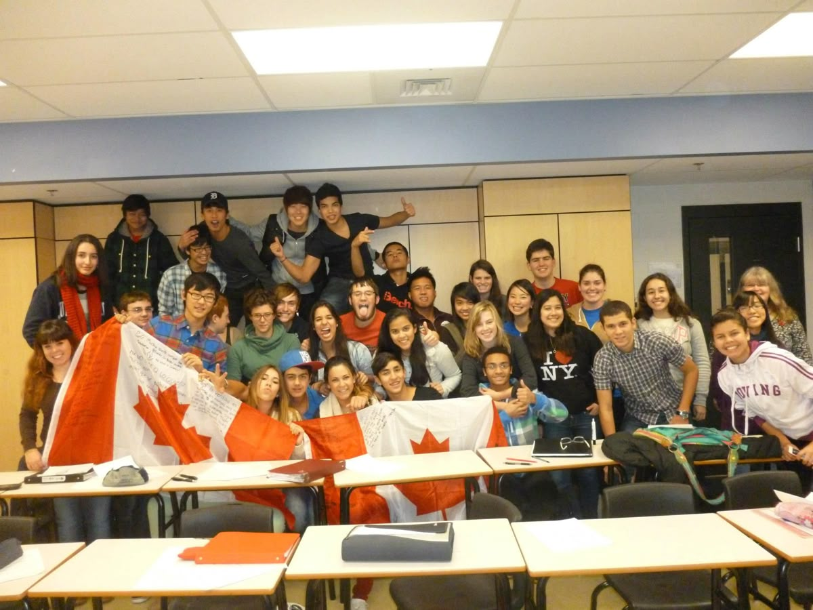

CANADÁ

O Canadá é um destino ideal para intercâmbio, oferecendo cultura, segurança e alta qualidade de vida. Bilíngue e multicultural, o país une pessoas do mundo todo...
O Canadá foi inicialmente habitado por povos indígenas, que desenvolveram culturas, línguas e tradições próprias ao longo de milhares de anos. No século XVI, franceses e ingleses iniciaram a colonização: os franceses se fixaram em Quebec, focando no comércio de peles, enquanto os ingleses ocuparam outras regiões do Atlântico. Após disputas, o Tratado de Paris de 1763 garantiu à Inglaterra o domínio sobre a maior parte do território.No século XIX, o país recebeu imigrantes britânicos, irlandeses e escoceses, o que impulsionou o crescimento urbano e econômico. Em 1867, com a união de Ontário, Quebec, Nova Escócia e Novo Brunswick, formou-se a Confederação Canadense, consolidando uma identidade nacional.Durante o século XX, o Canadá expandiu seu território, adotou políticas de multiculturalismo e participou ativamente da Segunda Guerra Mundial ao lado dos Aliados. Com o tempo, conquistou maior autonomia do Reino Unido e tornou-se um país moderno, democrático e diverso, reconhecido pelo respeito aos direitos humanos e pela inclusão social.
O Canadá possui tradições que refletem sua diversidade cultural e o ritmo das quatro estações do ano. O Canada Day, celebrado em 1º de julho, é o principal feriado nacional, com desfiles, shows e fogos de artifício em todo o país. O Thanksgiving canadense, comemorado em outubro, é um momento de gratidão pelas colheitas, reunindo famílias em torno de refeições típicas. Durante o inverno, festivais de neve, patinação, esqui e esculturas de gelo animam cidades como Quebec e Ottawa, enquanto o Natal é celebrado com mercados, luzes e tradições europeias. O Canadá também abriga festivais culturais de grande importância, como o Winterlude em Ottawa, o Caribana em Toronto e o Festival de Jazz de Montreal, que celebram música, dança e a diversidade das comunidades. Além disso, muitos povos indígenas mantêm rituais, danças e festivais tradicionais que preservam suas histórias e costumes. O hóquei no gelo, mais do que um esporte, é parte da identidade canadense e uma paixão nacional, presente em jogos e campeonatos por todo o país. Todas essas tradições mostram como o Canadá combina modernidade, diversidade cultural e respeito às suas raízes, criando experiências únicas para moradores e visitantes.
O Canadá é um país multicultural e bilíngue, com inglês e francês como idiomas oficiais, resultado da influência de colonizadores europeus e da rica herança indígena. Ao longo dos séculos, a chegada de imigrantes de todo o mundo consolidou um país diverso, onde diferentes culturas convivem e se complementam.Essa diversidade é visível na música, que vai do folk tradicional às tendências modernas, na literatura, com autores de renome internacional, e nas artes visuais, incluindo pintura, escultura e cinema. Os festivais culturais são um reflexo dessa pluralidade: o Festival de Jazz de Montreal, o Caribana em Toronto e o Winterlude em Ottawa celebram música, dança, cores e tradições de várias comunidades.Além disso, cada região do Canadá preserva suas características culturais próprias. Quebec mantém forte influência francesa na arquitetura, gastronomia e costumes cotidianos, enquanto o oeste do país valoriza a cultura indígena e as tradições locais. Nas cidades canadenses, museus, galerias e teatros promovem a arte, a história e a educação, tornando a experiência cultural completa e acessível a moradores e visitantes.O Canadá é, portanto, um país que combina tradição e modernidade, abraça a diversidade e promove o respeito às diferenças, tornando sua cultura rica, dinâmica e única no mundo.
No Canadá, a pontualidade, a educação e o respeito são muito valorizados, e as conversas costumam ser formais com desconhecidos. A família é importante, mas a independência individual também é valorizada, e reuniões sociais com amigos e familiares são comuns. O país possui festivais e tradições regionais, como Winterlude, o Carnaval de Quebec e pow wows indígenas, além de atividades culturais como literatura, música e cinema. Os canadenses mantêm forte relação com a natureza, praticando esportes ao ar livre, trilhas, camping e esportes de inverno, e valorizam a preservação ambiental.

A gastronomia do Canadá é rica e diversificada, refletindo sua multiculturalidade e os recursos naturais de cada região. Entre os pratos típicos, destacam-se o poutine, feito com batatas fritas, queijo coalho e molho gravy; a tourtière, torta de carne típica de Quebec servida especialmente no Natal; o bannock, pão indígena assado ou frito; e os Nanaimo bars, doces originários da Colúmbia Britânica, com camadas de biscoito, creme e chocolate. Ingredientes populares incluem o xarope de bordo, utilizado em panquecas, sobremesas e pratos salgados; frutos do mar como salmão, lagosta, caranguejo e mexilhões, principalmente na costa atlântica; carnes de alce, caça, frango e bovina; além de produtos lácteos, como queijos locais e manteiga. Entre as bebidas, destacam-se as cervejas artesanais, a cidra de maçã, o maple liqueur feito com xarope de bordo, e o consumo frequente de café e chá, especialmente no inverno. A culinária canadense combina influências indígenas, francesas, britânicas e de imigrantes de diversas partes do mundo, e nas grandes cidades é comum encontrar restaurantes de cozinha internacional, reforçando a multiculturalidade gastronômica do país.
O Canadá possui uma economia desenvolvida e diversificada, sendo um dos países mais ricos do mundo. Seus principais setores incluem recursos naturais, como petróleo, gás natural, madeira e minerais; agricultura, com destaque para grãos, laticínios e carnes; indústria, especialmente manufatura de automóveis, aeronaves e tecnologia; e serviços, como turismo, finanças, educação e saúde. O país mantém fortes relações comerciais com os Estados Unidos, China, União Europeia e outros países, além de investir em tecnologia, inovação e energias renováveis.O sistema educacional canadense é público, gratuito e de alta qualidade até o ensino médio, sendo gerido pelas províncias e territórios, o que gera algumas diferenças regionais. O Canadá conta com universidades renomadas, como University of Toronto, McGill University e University of British Columbia, atraindo muitos estudantes estrangeiros. Além disso, programas de formação técnica e profissional são bem estruturados, preparando uma mão de obra qualificada para os diversos setores da economia.

O Canadá é um destino turístico muito procurado por sua beleza natural e diversidade cultural. Entre as cidades mais visitadas estão Toronto, Vancouver, Montreal e Quebec, que oferecem atrações urbanas, museus, restaurantes e vida noturna. O país também é famoso por seus pontos turísticos naturais, como as Niagara Falls, as Montanhas Rochosas, o parque de Banff e a região histórica do Old Quebec.O turismo no Canadá combina experiências culturais e ao ar livre: os visitantes podem participar de festivais locais, conhecer a cultura indígena, praticar esportes como esqui, snowboard, canoagem e trilhas, ou simplesmente explorar as paisagens deslumbrantes de lagos, florestas e montanhas. Além disso, o país é conhecido por sua hospitalidade, segurança e infraestrutura turística de qualidade, tornando-o ideal para turistas de todas as idades.
O Canadá é um dos destinos mais procurados para intercâmbio por sua educação de qualidade, segurança e diversidade cultural. O país oferece programas de idiomas, ensino médio, faculdade e trabalho-estudo, que permitem aprender inglês ou francês, conhecer novas culturas e até permanecer no país após os estudos.Para participar , é necessário ter um passaporte válido e o visto correto: o eTA para cursos de até seis meses e o Study Permit para estudos mais longos, que pode permitir trabalhar até 20 horas por semana. É importante apresentar documentos como comprovante de matrícula e comprovação financeira e planejar tudo com antecedência. O intercâmbio no Canadá é uma experiência enriquecedora que une aprendizado, crescimento e novas oportunidades.
A recepção dos canadenses aos intercambistas é geralmente muito acolhedora e amigável, refletindo a tradição do país de valorizar a diversidade cultural. Canadenses costumam ser educados, respeitosos e pacientes, facilitando a adaptação de estudantes estrangeiros, seja nas escolas, universidades ou no dia a dia da cidade.Em muitas cidades, há programas de integração para estudantes internacionais, oferecendo suporte em questões acadêmicas, culturais e sociais, além de atividades de networking e eventos culturais. Os canadenses também costumam ajudar os intercambistas com informações sobre transporte, moradia e costumes locais, incentivando a participação em clubes, esportes e atividades comunitárias.Essa postura aberta e receptiva faz com que os intercambistas se sintam bem-vindos, contribuindo para uma experiência mais positiva e enriquecedora no país.
No Canadá, os intercambistas têm várias opções de acomodação, cada uma oferecendo experiências diferentes. Uma das mais comuns são as residências estudantis dentro ou próximas das universidades e colleges, onde é possível morar em quartos individuais ou compartilhados, com acesso a áreas comuns, cozinhas e, em alguns casos, refeições incluídas. Esse tipo de acomodação facilita a socialização e a integração com outros estudantes. Outra alternativa bastante procurada é o homestay, em que o estudante mora com uma família canadense, participando do dia a dia da casa e vivenciando a cultura local de forma direta, ideal para quem quer praticar inglês ou francês e entender os costumes do país. Para quem busca mais independência, há apartamentos ou casas para alugar, muitas vezes compartilhados com outros estudantes para reduzir custos. Além disso, algumas cidades oferecem residências privadas e hostels estudantis, que podem ser soluções temporárias ou de curto prazo. Independentemente da escolha, todas as acomodações no Canadá prezam por segurança, conforto e acesso a transporte e serviços, garantindo que o intercambista possa se concentrar nos estudos e aproveitar a experiência cultural ao máximo.
A saúde mental dos intercambistas no Canadá é um aspecto importante da experiência, pois estar longe de casa, da família e de amigos pode gerar saudade, estresse e solidão, especialmente nos primeiros meses. A adaptação a um novo idioma, cultura, rotina acadêmica e clima também pode aumentar a ansiedade. Muitas universidades e colleges canadenses oferecem apoio psicológico, serviços de aconselhamento e grupos de suporte para estudantes internacionais, ajudando na gestão do estresse, depressão ou dificuldades de adaptação. Além disso, atividades sociais, esportes, clubes estudantis e a prática de hobbies são estratégias eficazes para manter o bem-estar emocional. Intercambistas são incentivados a buscar ajuda cedo, manter contato com familiares e criar uma rede de apoio no novo país, garantindo que a experiência seja enriquecedora tanto academicamente quanto pessoalmente.
 

No Canadá, a locomoção é eficiente e varia conforme a cidade. Nas grandes cidades, como Toronto, Montreal e Vancouver, há sistemas de transporte público bem estruturados, incluindo metrôs, bondes, ônibus e trens urbanos. Para viagens entre cidades ou longas distâncias, trens e aviões são opções rápidas e confortáveis, com destaque para a VIA Rail e companhias aéreas como Air Canada e WestJet. Em regiões menores, o carro é a forma mais prática de se deslocar, e muitas cidades também oferecem ciclovias e programas de aluguel de bicicletas. Táxis e aplicativos de transporte, como Uber e Lyft, facilitam os trajetos urbanos, enquanto em cidades costeiras, balsas conectam ilhas e o continente. Para intercambistas, essas opções garantem mobilidade, conforto e facilidade para explorar o país.
O custo de vida no Canadá é considerado alto, variando conforme a cidade e o estilo de vida. As grandes metrópoles, como Toronto e Vancouver, estão entre as mais caras, enquanto cidades médias ou menores, como Montreal, Ottawa e Winnipeg, costumam ser mais acessíveis. A moradia é o principal gasto, com aluguéis que podem variar entre CAD $1.000 e $3.500 por mês, dependendo da localização. Os custos com alimentação giram em torno de CAD $300 a $500 mensais, enquanto o transporte público custa, em média, de CAD $90 a $160 por mês. As contas básicas, como energia, internet e celular, somam cerca de CAD $150 a $300 mensais. O sistema de saúde público é gratuito apenas para residentes, sendo necessário contratar um seguro privado, que custa entre CAD $50 e $100 por mês, para estudantes e visitantes. No total, o custo médio mensal para uma pessoa varia entre CAD $1.800 e $4.500, dependendo da cidade escolhida e do padrão de vida.
O Canadá é o segundo maior país do mundo em extensão territorial, localizado na América do Norte, limitado ao norte pelo Oceano Ártico, a oeste pelo Oceano Pacífico, a leste pelo Oceano Atlântico e ao sul pelos Estados Unidos. O país é dividido em 10 províncias e 3 territórios, cada um com características geográficas próprias.O território canadense apresenta grandes diversidade de paisagens, incluindo as Montanhas Rochosas, planícies férteis, florestas densas, milhares de lagos e rios, além de regiões árticas com tundra gelada. O clima varia bastante: o norte é extremamente frio e árido, o centro possui verões quentes e invernos rigorosos, e a costa leste apresenta clima mais temperado e úmido.O Canadá também é conhecido por seus parques nacionais e reservas naturais, que protegem a fauna e flora locais e atraem turistas para atividades ao ar livre, como trilhas, esqui e observação da vida selvagem.
O Canadá possui um clima diversificado, influenciado pela sua grande extensão territorial. De modo geral, o país apresenta invernos longos e rigorosos e verões curtos e amenos, mas as condições variam bastante conforme a região. No norte canadense (Yukon, Nunavut e Territórios do Noroeste), o inverno é extremamente frio, com temperaturas que podem chegar a -40 °C, e o verão é curto e fresco. Nas províncias centrais, como Ontário e Quebec, os invernos são frios, com muita neve, enquanto os verões podem alcançar 25 °C a 30 °C. Na costa oeste, principalmente em Vancouver e na Colúmbia Britânica, o clima é mais ameno, com invernos chuvosos e verões agradáveis, geralmente entre 20 °C e 25 °C. Já as regiões leste e atlânticas, como Nova Escócia e Terra Nova, têm invernos frios e úmidos, e verões moderados. Para intercambistas, é essencial estar preparado para o frio intenso do inverno e aproveitar o verão relativamente curto, mas confortável, no país.
O Canadá é berço de diversos famosos reconhecidos mundialmente nas áreas de música, cinema, esportes e literatura. Na música, destacam-se Celine Dion, Justin Bieber, Drake, Shania Twain e The Weeknd. No cinema e televisão, nomes como Ryan Reynolds, Rachel McAdams, Jim Carrey e Seth Rogen ganharam fama internacional. Nos esportes, o país produziu grandes atletas como Wayne Gretzky, considerado o maior jogador de hóquei de todos os tempos, Steve Nash, ícone do basquete, e Connor McDavid, destaque na NHL. Na literatura, autoras como Margaret Atwood e Alice Munro, vencedora do Nobel, representam a excelência canadense na escrita.
O maple syrup canadense representa cerca de 71% da produção mundial, sendo Quebec responsável pela maior parte. O hóquei no gelo é tão culturalmente importante que é considerado esporte nacional de inverno, enquanto o lacrosse é o esporte nacional de verão. O Canadá possui o maior número de lagos do mundo, com mais de 2 milhões, cobrindo cerca de 9% do território do país. Yellowknife, nos Territórios do Noroeste, é um dos melhores lugares do mundo para observar a aurora boreal. O país tem regiões inteiras de florestas boreais, que representam aproximadamente 1/3 da cobertura florestal do mundo. A cidade de Churchill, Manitoba, é conhecida como a “capital mundial dos ursos polares”. O Canadá possui o Parque Nacional Banff, a primeira área protegida do país, criada em 1885, famosa por suas montanhas e lagos glaciares. Niagara Falls é compartilhada com os EUA, mas o lado canadense oferece a melhor vista panorâmica e atrações turísticas. O norte do Canadá é tão remoto que algumas comunidades só são acessíveis por avião ou barco, especialmente no inverno. A bandeira canadense, com a folha de bordo vermelha, foi adotada oficialmente em 1965, e é hoje um dos símbolos mais reconhecidos do país.
CLIQUE AQUI 👇 E EMBARQUE NESSA AVENTURA!🌍
O edifício St. Lawrence Market South é um importante edifício de mercado público em Toronto , Ontário , Canadá . Ele está localizado na esquina sudoeste das ruas Front e Lower Jarvis. Junto com o St. Lawrence Market North e o St. Lawrence Hall , ele compõe o complexo do St. Lawrence Market .O edifício atual foi inaugurado em 1902, incorporando o edifício da Prefeitura de Toronto de 1845 à estrutura. O edifício foi restaurado durante a década de 1970.